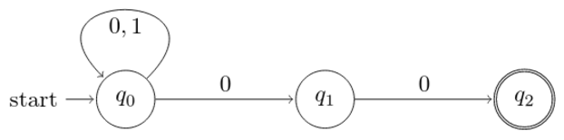

Introduction
Deterministic Finite Automata
Nondeterministic Finite Automata
Pushdown Automata
Turing Machines
Questions
Programming · X 2015
Welcome to Day 1 of MINET X 2016. We hope you have as much fun solving the problems as we had making them. You have been provided with the Code::Blocks and Turbo C++ environments. The event will be three hours long. The highest amount possible in this event is 1,000$. Everyone's score will be relative to the team with the highest score which have a direct effect to your funds. Whenever you wish to attempt a question, raise your hand and one of us will come to you. If you have any questions about the problems, do not be afraid to ask them of us. Have fun, and Make beautiful machines. Best of luck!
Introduction
"An object is of the highest degree of complexity if it can do very difficult and involved things.”
— John von Neumann, Theory Of Self Reproducing Automata
The term "Automata" is derived from the Greek word "αὐτόματα" which means "self-acting". An automaton (Automata in plural) is an abstract self-propelled computing device which follows a predetermined sequence of operations automatically.
Every computational device (everything from phones and calculators to logic gates and compilers) has limitations and no device can be termed as a one size fits all for computation. The study of Automata Theory explores these limitations and advantages of different automata. This subject plays a big role in Mathematics and Theoretical Computer Science as a part of it deals with perhaps the most important question of our century $P$ $vs.$ $NP$.
Deterministic Finite Automata(DFAs)
We don’t realize it but we come across several DFAs in our daily life and they are beloved to Code Golfers as these abstract machines are used to compute Regular Expressions(regex).
DFAs have a finite amount of memory, more specifically a finite number of states that the machine can be in, it does not depend on the size of input given to it. To give you a few rudimentary examples consider the following:
-
An electric switch.
It can be in two states, ON and OFF.A $PUSH$ operation on a state changes its state and only a $PUSH$ operation can change states which makes $PUSH$ the language of this DFA. If you start on $ON$ and give an even number of PUSH operations your final state will be $ON$ and if you give an odd number of $PUSH$ operations your final state will be $OFF$.
The computation would be as follows:
- $\delta(ON, PUSH) = OFF$
- $\delta(OFF, PUSH) = ON$
Note:The notation used here will be explained in detail a bit later.
- A Fan regulator
It has a total of four states, Off, Low, Medium and High. You can change between the states by either turning the regulator Clockwise or Anticlockwise which we will represent as $C$ and $A$ respectively. Hence, $(C,A)$ is the language of this DFA.Here, $q_0$ is the start state and the Off state of the regulator, $q_1$ is Low, $q_2$ is Medium and $q_3$ is High.
So, if I were to give a string of operations, say, $w = ‘AACCCC’$. The machine would follow the following path:
$q_0 \rightarrow q_3 \rightarrow q_2 \rightarrow q_3 \rightarrow q_0 \rightarrow q_1 \rightarrow q_2$
Over here we see that the final state reached by the string, $w$ is $q_2$. But the person who made this DFA wanted the Fan off. Hence, in this diagram we notice that $q_0$ is an bolded (has an extra circle around it); that is used to denote an accept state of a DFA. A string of operations is only accepted if it finishes at an accept state. In the case of $w$, it doesn’t reach an accept state hence, it is not accepted by this DFA.
Notation and Rules
A DFA is defined as a five tuple, $D = (Q, \Sigma, \delta, q_0, F)$ where:
- $Q$ is the set of states. This is a set of all states in the DFA, even the start state, $q_0$ and final set of states $F$ are present in this set.
- $\Sigma$ is the language of the DFA.
- $\delta$ is the transition function. The transition function is used to transition between states. In a DFA it’s in the form $Q × \Sigma \rightarrow Q$ where $Q$ is the set of states and $\Sigma$ are the symbols.
- $q_0$ is the start state.
- $F$ is the set of accept states
Languages
Languages of Abstract machines are not too different from the languages that we’re familiar with. In English we have a set of words formed over an alphabet similarly, a simple way to think about languages of abstract machines is as a set of strings $w$ formed over an alphabet $\Sigma$.
Star Operation: $A^* = \{x_1, x_2, x_3, x_k | k \geq 0$ and $x_i \in A\}$
When we say, $\Sigma^* = \{a, b\}$ we actually mean all possible strings that could be made with a and b, which are:
$a, b, aa, bb, ab, ba, aaa, bbb, aba…$
And when we put a superscript over the alphabet we denote the maximum length of the string with that. I.e,
$w = \{\Sigma^2|$ $\Sigma = \{a, b\}\}$ we mean:
$w = {a, b, aa, bb, ab, ba}$
There can be several DFAs that accept one language but not vice versa.
Examples of DFAs
A DFA which accepts a string $w$, if $w$ does not contain the substring $101$.
For this example:
- $Q = {q_0, q_1, q_2, q_3}$
- $\Sigma = \{0,1\}^*$
- $\delta(q_0, 0) = q_0$ and $\delta(q_0,1)=q_1$ and so on.
- $q_0$ is the start state.
- $F = \{q_0, q_1, q_2\}$
So if we were to run the string, $w = “100101”$, the computation would be as follows:
- $\delta(q_0, 1) = q_1$
- $\delta(q_1, 0) = q_2$
- $\delta(q_2, 0) = q_0$
- $\delta(q_0, 1) = q_1$
- $\delta(q_1, 0) = q_2$
- $\delta(q_2, 1) = q_3$
Also, $q_3$ here is a dump state.
A DFA that accepts a string $w$, if the length is divisible by 4.
For this Example:
- $Q = {q_0, q_1, q_2, q_3}$
- $\Sigma = \{0,1\}^*$
- $\delta(q_0, 0) = q_0$ and $\delta(q_0,1)=q_1$ and so on.
- $q_0$ is the start state.
- $F = \{q_0\}$
- $\delta(q_0, 1) = q_1$
- $\delta(q_1, 0) = q_2$
- $\delta(q_2, 0) = q_3$
- $\delta(q_0, 1) = q_0$
Since $q_0$ is the accept state, the string $w$ will be accepted by the DFA.
Nondeterministic Finite Automata
Introduction
An NFA, similar to a DFA, consumes a string of input symbols. For each input symbol, it transitions to a new state until all input symbols have been consumed. Unlike a DFA, it is non-deterministic, i.e., for some state and input symbol, the next state may be nothing or one or two or more possible states. Thus, in the formal definition, the next state is an element of the power set of the states, which is a set of states to be considered at once. The notion of accepting an input is similar to that for the DFA. When the last input symbol is consumed, the NFA accepts if and only if there is some set of transitions that will take it to an accepting state. Equivalently, it rejects, if, no matter what transitions are applied, it would not end in an accepting state.
Notation and Rules
It is defined as a five tuple, $N = (Q, \sigma, \delta, q_0, F)$ where:
- $Q$ is the set of states. This is a set of all states in the DFA, even the start state, $q_0$ and final set of states $F$ are present in this set.
- $\Sigma$ is the language of the DFA.
- $\delta$ is transition function that takes two arguments a state and an input symbol and it returns a subset of $Q$ that is, $Q \times (\Sigma \cup \{\epsilon\}) \rightarrow 2^Q$ where $2^Q$ is the power set of $N$ (the set of subsets of $Q$).
- $q_0$ is the start state.
- $F$ is the set of accept states
$\epsilon$ marks state transitions that do not consume any input. The symbol ε does not belong to any alphabet These transitions thus express the non-determinism of the automaton.
Examples of NFAs
-
An NFA which accepts a string $w$, if it ends with the substring $“00”$.
 For this example:- $Q = {q_0, q_1, q_2}$
- $\Sigma = \{0,1\}^*$
- $q_0$ is the start state.
- $F = \{q_2\}$
For the string “0100”, the computation is as follows:Input Symbol States $0$ ${q_0, q_1}$ $1$ ${q_0}$ $0$ ${q_0, q_1}$ $0$ ${q_0, q_1}$
Since at least one of the computation paths leads to an accept state($q_2$), $w$ is accepted by the NFA.
-
An NFA which accepts a string $w$, where length of $w$ is either divisible by 2, or 3, or both.
For the string “11111”, the computation would be as follows:
Input Symbol States $\epsilon$ $\{q_0,q_3\}$ $1$ $\{q_2,q_4\}$ $1$ $\{q_1,q_5\}$ $1$ $\{q_2,q_3\}$ $1$ $\{q_1,q_4\}$ $1$ $\{q_2,q_5\}$
Since $q_2$ and $q_5$ are not part of the accept states, the string won’t be accepted.
Pushdown Automata
Introduction
A pushdown automata is a finite automata with a memory model of a stack attached to it. There are two types of PDAs, Deterministic Pushdown automata(DFA+Stack), DPDA and Nondeterministic Pushdown Automata(NFA+Stack), NDPA.
Notation and Rules
A PDA is defined as a seven tuple, $P = (Q, \Sigma, \delta, q_0, Z_0, F, \Gamma)$ where:
- $Q$ is the set of states. This is a set of all states in the DFA, even the start state, $q_0$ and final set of states $F$ are present in this set.
- $\Sigma$ is the language of the DFA.
- $\delta$ is the transition function. The transition function is used to transition between states. In a DFA it’s in the form $Q × (\Sigma \cup \{\epsilon\})\rightarrow Q × \Gamma^*$ where $Q$ is the set of states, $\Sigma$ are the symbols. and $\Gamma$ is the alphabet of the stack
- $q_0$ is the start state.
- $Z_0$ is the bottom of the stack.
- $F$ is the set of accept states
Examples of PDAs
- Let’s consider a language $L$ where $L = \{0^n1^n| n \geq 0\}$ Let the DPDA be called $M$ where $M=(Q,\Sigma,\Gamma,\delta,q_0,Z_0,F)$ where:
- states:$Q = \{p,q,r\}$
- Input alphabet:$\Sigma = \{0,1\}$
- stack alphabet:$\Gamma = \{A,Z\}$
- Start state: $q_0 = p$
- Start stack symbol: $Z$
- Accepting states: $F = \{r\}$
- $M$ is a DPDA
The transition relation $\delta$ consists of the following five instructions:
- $(p,0,Z) \rightarrow (p,AZ)$
- $(p,0,A) \rightarrow (p,AA)$
- $(p,1,A) \rightarrow (q,\epsilon)$
- $(q,1,A) \rightarrow (q,\epsilon)$and,
- $(q,\epsilon,Z)(r,Z)$
In words, the first two instructions say that in state $p$ any time the symbol $0$ is read, one $A$ is pushed onto the stack. Pushing symbol $A$ on top of another $A$ is formalized as replacing top $A$ by $AA$ (and similarly for pushing symbol $A$ on top of a $Z$ ).
The third instruction says that in state $q$, for each symbol $1$ read, one $A$ is popped. Finally, the fourth instruction says that the machine may move from state $q$ to accepting state $r$ only when the stack consists of a single $Z$ . - Let’s consider a language $L$ where $L = ww^R$ $|$ $w = (a+b)^*$
The dollar sign here has been replaced with $D$.
Initially we put a special symbol $D$ into the empty stack. At state $q_2$, the $w$ is being read. In state $q_3$, each $a$ or $b$ is popped when it matches the input. If any other input is given, the PDA will go to a dead state. When we reach that special symbol $D$, we go to the accepting state $q_4$.
Turing Machines
Questions
1
Construct DFA for binary strings whose first and last symbol are the same.
0.5
2
Construct a DFA for $L$, given $L=\{ab^5 wb^4\}$ where $w=\{a, b\}^*$.
1
3
Construct a DFA for binary strings whose decimal representations are divisible by $3$.
2
4
Construct an NFA for binary strings that have either odd number of $0$’s, or number of $1$’s not divisible by $3$, or both.
1
5
Let $L$ be the language of binary strings where every $0$ is followed by a $1$. Construct a DFA and an NFA respectively that accepts strings of $L$ with minimum number of states.
2
6
Construct NFA that recognizes language generated by ${abba, bab}^*$.
0.5
7
Construct a pushdown automaton that accepts the set $L$ of all strings in ${a, b}^*$ having an odd length and whose middle symbol is $b$.
2
8
Construct pushdown automata for the language
$w ∈ {a, b}^*$, such that for every $2$ $a$’s, there are $3$ $b$’s.
2
9
Construct a PDA which accepts strings of the language $\{$$ [, ], \{, \}, (, )$ $\}^*$ containing nested pairs of brackets. For example, “[[[{{(((())))}}]]]”.
2
10
Construct a DFA The set of all binary strings that contain at least two $0$’s and at most one $1$.
3
11
Construct a DFA recognizing binary numbers whose decimal representations are multiples of 5.
4
12
Make a turing machine that multiplies two number given in binary. The numbers will be given in binary separated by spaces. Output in binary.
6
13
Make a turing machine that writes the digits of the sequence 0 0 1 0 1 1 0 1 1 1 0 1 1 1 1 0 ...
6
14
Make a turing machine that converts a number from binary to decimal.
8
15
Make a turing machine that checks if a given number is a prime. The input will be given in binary form.
22
10 Distinguishability of quantum states We have seen that the probability of measuring an outcome in a quantum system in the modulus squared of the corresponding coefficient. Now, I give you two systems (photons, say): $$\ket{\psi_1}= (\ket{0}+\ket{1})/\sqrt{2},\ket{\psi_2}= (\ket{0}-\ket{1})/\sqrt{2}$$ Note that all the probablities are half, so measuring both the states would give you the same results. How do you, then, distinguish between them? Feel free to prepare any more photons and conduct thought experiments with them.